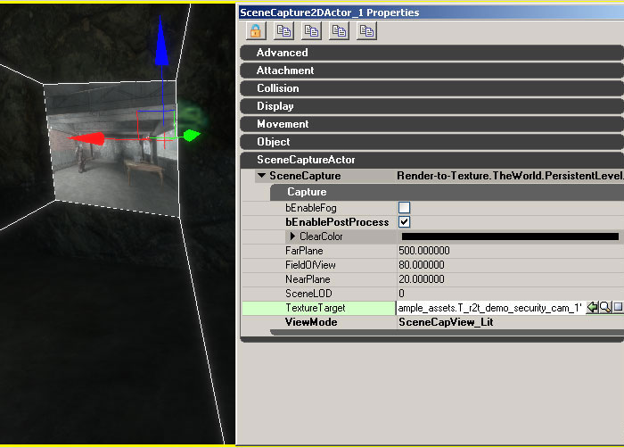
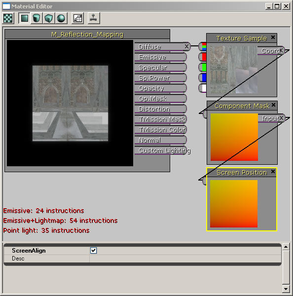

UDN
Search public documentation:
RenderToTexture
日本語訳
中国翻译
한국어
Interested in the Unreal Engine?
Visit the Unreal Technology site.
Looking for jobs and company info?
Check out the Epic games site.
Questions about support via UDN?
Contact the UDN Staff
中国翻译
한국어
Interested in the Unreal Engine?
Visit the Unreal Technology site.
Looking for jobs and company info?
Check out the Epic games site.
Questions about support via UDN?
Contact the UDN Staff
UE3 Home > Materials & Textures > Render to Texture
Render to Texture
- Render to Texture
Overview
Creating a render target texture
- RenderToTexture - used for 2d, reflection, and portal scene captures
- RenderToTextureCube - used for cube map scene captures
HDR Support
Only RGBA render-to-texture resources can be created at this time. Support for floating point HDR targets may be added in the future.Rendering the scene to the texture
SceneCapture2DActor
With a SceneCapture2DActor you can have the scene captured as if it was projected onto the surface of the near plane of a view frustum. When placing one of these actors in the level you will notice that a view frustum is displayed that shows the captured view of the scene. The actor's position and orientation are used for placing and orienting the view of the captured scene. The SceneCapture actor can also be attached to other actors in case you want it to be driven by a scripted sequence or manipulated by physics.  Note that this actor is just a container for a SceneCapture2DComponent. Details about each of the SceneCapture component types are explained later in this document. Before any rendering occurs, the SceneCapture actor has to have a texture target to render to. You can assign your render-to-texture resource to the SceneCapture actor by setting the TextureTarget property of its SceneCapture compoenent.SceneCaptureCubeMapActor
The SceneCaptureCubeMapActor is similar to the SceneCapture2DActor except that it has to render the scene in six separate passes - one pass for each cube map face. This can obviously be an expensive operation so it is recommended that a lower level of detail setting is used. Also, the capture expects a "RenderToTextureCube" resource to use as its target texture. Using the default "RenderToTexture" resource creates only a single 2D surface and can not be used for the cube map scene captures. The steps for creating a "RenderToTextureCube" are similar to creating a "RenderToTexture" resource. Note that this actor is just a container for a SceneCaptureCubeComponent. Details about each of the SceneCapture component types are explained later in this document.SceneCaptureReflectActor (Dynamic Reflections)
The SceneCaptureReflectActor allows for dynamic reflections of the scene. Placing an actor of this type in the level creates a view capture of the scene that is reflected and clipped properly about a mirroring surface. The mirror surface is oriented so that it faces in the same direction as the actor's direction. The positioning of the actor is also important since that will change the mirror plane's position and therefore the clipped region of the scene. One important note about the resulting reflection is that the render-to-texture resource should be accessed using a ScreenPosition material expression with the ScreenAlign option set to true and with a ComponentMask material expression that only uses Red,Green channels. This is needed because the reflection calculations assume that the texture will be mapped as if it covers the entire screen. The following image better illustrates the required material nodes:  Note that this actor is just a container for a SceneCaptureReflectComponent. Details about each of the SceneCapture component types are explained later in this document.SceneCapturePortalActor
The SceneCapturePortalActor allows the scene to be rendered from the viewpoint of another location as if it was mapped to the surface of a portal. Note that this actor is just a container for a SceneCapturePortalComponent. Details about each of the SceneCapture component types are explained later in this document.SceneCaptureComponents
These components can capture the scene to a texture target. Each component does the actual work of placing a scene capture probe in the level so that the scene gets rendered in a separate pass before rendering the main view of the level to the back buffer. You can attach these components to any other type of actor as well. All SceneCaptureComponent types have a set of common properties that can be modified. Each component has a target texture to render the scene to:- TextureTarget - A render-to-texture resource for the resulting scene capture. Note that the scene capture won't render anything unless it has an assigned target texture.
- bEnablePostProcess - Toggles the post processing step that is applied to the scene.
- bEnableFog - Toggles any height fog rendering.
- ClearColor - The background clear color for the texture target.
- ViewMode - Enumerates the differnet view and lighting configurations. The available modes are:
| Mode | Description |
| SceneCapView_Lit | Default rendering mode for UE3 scenes with dynamic shadows and lighting |
| SceneCapView_Unlit | No shadows or lighting passes are used when rendering the scene |
| SceneCapView_LitNoShadows | Same as the default lit rendering mode but without dynamic shadows |
| SceneCapView_Wire | All geometry in the scene is rendered using wireframe mode |
- SceneLOD - Sets the maximum Level of Detail (LOD) setting for all geometry in the scene. A value of 0 represents the highest LOD setting. (Currently not implemented)
- FrameRate - Sets the FPS (Frames per Second) rate to capture the scene. For example, a value of 30 would capture the scene at 30 FPS. Also note that if the FrameRate value is 0 then the scene will only be captured once. This can be useful when you know you don't need to constantly update a particular scene capture.
- PostProcess - Post process chain to be used by the capture. You can specify a custom post process chain for use by each scene capture (See known limitations at the end of this page).
SceneCapture2DComponent
This component handles rendering 2D captures of the scene as described in the SceneCapture2DActor. It manages the state necessary for this type of rendering, and adds a FSceneCaptureProbe2D to the current scene in order to render the capture in a separate pass. The following properties are specific to this type of capture component:- FieldOfView - The horizontal field of view used to calculate the view projection.
- NearPlane - The screen aligned view distance that represents the near clip plane.
- FarPlane - The screen aligned view distance that represents the far clip plane. Any geometry that is completely behind the far clip plane is culled (not rendered). Decreasing the FarPlane value will result in better performance.
- bUpdateMatrices - If this flag is set to false then the view and projection matrices are not automatically updated, and they can be set manually. This can be useful for gameplay code that needs more control over how a scene is being rendered.
SceneCaptureCubeMapComponent
This component handles rendering the six capture passes for each face of a cube map render target texture as described in the SceneCaptureCubeActor. It manages the state necessary for this type of rendering, and adds a FSceneCaptureProbeCube to the current scene in order to render the captures in a separate pass.- NearPlane - The screen aligned view distance that represents the near clip plane.
- FarPlane - The screen aligned view distance that represents the far clip plane. Any geometry that is completely behind the far clip plane is culled (not rendered). Decreasing the FarPlane value will result in better performance.
SceneCaptureReflectComponent (Dynamic Reflections)
This component handles rendering the scene using a mirror plane to flip the current view and to clip all the geometry that is behind the plane. It manages the state necessary for this type of rendering, and adds a FSceneCaptureProbeReflect to the current scene in order to render the captures in a separate pass.- ScaleFOV - not used
SceneCaptureParaboloidComponent
Currently not supported.SceneCapturePortalComponent
This component renders the scene as if it was viewed through a portal at another location. It uses both the orientation of the current portal and the destination portal to orient the capture. Note that the current portal and destination portal should use their own unique 2D render-to-texture resources.- ViewDestination - The actor at the view location for this portal. This is the point where the scene is captured from.
- ScaleFOV - not used
Saving static captures
Static cube map captures
One very common usage for creating static textures from dynamic render-to-texture resources is for generating cubemaps from your scene. Here are the steps for generating cubemaps from your scene:- Place a SceneCaptureCubeMapActor in the map at the location where you want the cubemap to be captured
- Create a new RenderToTextureCube resource in a package. This will be the dynamic render-to-texture target that the scene will be rendered to.
- Assign the RenderToTextureCube from step 2 to the TextureTarget property of the SceneCaptureCubeMapActor.
- Your scene is now being captured to the dynamic render-to-texture target. You can now save snapshots from this dynamic texture by right-clicking on it and selecting Create Static Texture... from the context menu. Each time you do this, a new static cubemap texture will be created along with the textures for its 6 corresponding faces.
- You can also move your SceneCaptureCubeMapActor to another location in the level and repeat step 4 for more static captures.
- Once you're done generating the static cube textures you can get rid of the temporary SceneCaptureCubeMapActor that you added to your level as well as the scratch RenderToTextureCube resource that goes with it.